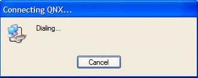

The following information provides the steps to link an embedded system running QNX Neutrino to a Windows network connection. Windows networking is controlled from a Network Connections panel. The following example shows you how to prepare your target and host for debugging using a PPP connection.
-
Select New Connection Wizard.

-
Select Set up an advanced connection, and then click Next.

-
In the Computer name field, type the name of the computer you want to connect, and then click Next.

-
From the list, select a device that you want to use to make the connection, and then click Next. For this example, we'll use the Communications cable between two computer (COM1) device.

-
Select Anyone's use if it isn't currently selected, and then click
Next.

-
Click Finish to create the connection.
Next, the network connections dialog, Connect, is displayed. Now, you'll have to provide the login credentials and configure the network connection to the machine you specified earlier.

-
Click Configure.

-
Click the Options tab.

-
Click the Security tab, and then click Settings.

-
Click the Networking tab.

-
For the Internet Protocol (TCP/IP), select Properties.

-
Click Advanced.

-
Click OK, and then select the Advanced tab.

While Windows waits to receive, the Connecting dialog is displayed.

Once communication begins, the following dialog is displayed:

Once the connection is established, the verification Connecting dialog closes, and a network icon is added to the Taskbar. To disconnect, you can right-click on the Taskbar icon and select Disconnect. You can reconnect as often as you wish without rebooting the target.